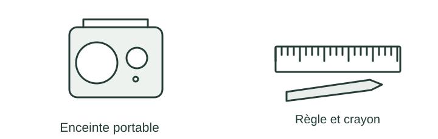

OBSERVER · EXPÉRIMENTER · EXPLIQUER
Dessiner et choisir une solution
Observe les changements d’échelle et compare les enceintes selon plusieurs critères.

✎ Garde ta feuille à côté de toi.Prévois sur papier → manipule → observe → rédige sur papier.
Des observations pour expliquer
- D–E : calcule et trace les rectangles à la règle, avec les dimensions réelles annotées.
- N3–N5 : justifie ton choix puis prépare la vérification.
Appuie ton explication sur une valeur, un changement observé ou une comparaison. Distingue ce que montre le modèle et ce qui reste à vérifier.